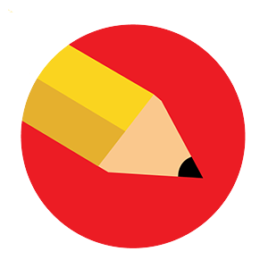
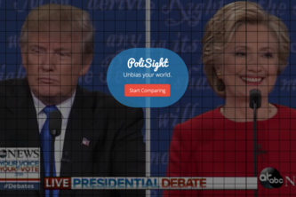
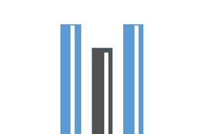

» PeerEditr
PeerEditr is the fastest, easiest, and most organized feedback platform for visual projects. Built with Meteor JS and React. Based at The House incubator in Berkeley.
» Health.me
iOS & Web app that streamlines communication between doctors and patients with mental illnesses.
Won MHacks 8’s Best Medicare Adherence App. Built with Swift and Meteor.

» PoliSight
Web app that helps users analyze and interpret the biases of different news sources. Uses IBM Watson’s language processing API and Chart.js to visually represent the author’s sentiments in a particular article.
» Vento
An Android application that allows you to receive step by step directions across the globe while being completely offline - no wifi or data connection needed.

» Synomyn
A real-time thesaurus to help students improve diction in their writing. Our unique, simplistic design allows anyone to just paste their work and receive quick suggestions.